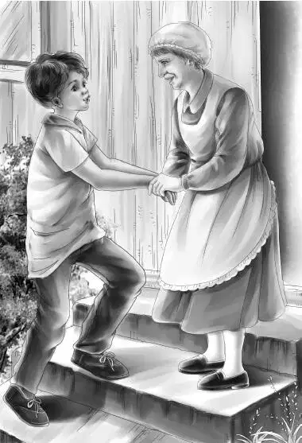

David looked puzzled when Mr. Alden chose him to tell Lovan.
“Mr. Alden，why me？” he asked.
Mr. Alden answered，“You know all about it， David，and you remember your grandmother. That will please Lovan. She is a fine person to have for a great-aunt.”
Just then they heard the helicopter.
“Lunch！” cried Benny.
Henry looked at his watch.“Did you know it was two o’clock？How did you ever stand it，Ben？”
“I was so interested in that chimney thing，” said Benny，“and the leather bag. I never thought of lunch.”
“Now you know how I feel，” said Dr. Osgood.“I forget all about eating.”
Mr. Carter said，“Jessie，give me one sandwich. I’ll go right back with the helicopter. I have some telephoning to do.”
They all wondered what it was about. But nobody asked a question. They just said goodbye. And back went the helicopter down the mountain.
Mr. Carter carefully held the leather bag. Mr. Alden had given it to him.
After lunch，Dr. Osgood and his head man stayed on Flat Top. But the rest began to climb down. They were eager to tell Lovan what had happened.
“But let’s not tell her the news too suddenly.” Jessie said.“It might be too much all at once.”
“Yes，” agreed Henry.“Maybe it would be a good idea if she met David first and then heard about the treasure.”
Violet said，“I think that is a good plan. Lovan can make up her mind about David and then he can tell her about the treasure.”
When they reached Lovan’s cottage，they found her sitting on the dinosaur step with a rough flat stone beside her. She was rubbing something on it.
Lovan had five white beads on a string. She had the string over her hand and was rubbing the white beads on the rough rock. The white pieces got rounder and rounder.
“You’re making beads！” cried Benny.
“Yes. I have almost finished，” said Lovan.“This is the last string.” They saw two boxes of round beads， one of white and one of purple beads.
Lovan went on. She saw that they wanted to know. “I break a clamshell in small pieces，” she said.“I make a small hole in every piece and string a few on a string. Then I grate them until they are round.”
“I never knew that，” said Mr. Alden.“I always wondered how wampum was made.”
“This is how it is done，” said Lovan.“Nobody uses wampum now. But I sometimes weave it into my baskets.”
All this time David had been watching Lovan. But Lovan was so busy she did not see David at all. Even Mr. Alden was a bit nervous now. He didn’t quite know how Lovan would feel about meeting her nephew. But Lovan herself settled that. Suddenly she looked up at Mr. Alden and saw David behind him.
“An Indian boy！” she said.“Who are you，little brother？”
David said，“Well，I suppose I am your grandnephew and you are my Great-Aunt Lovan.”
Lovan did not speak. She was thinking. She was looking David over. At last she said，“Then that baby did not die？”
“I guess not，” said David，smiling a little.“I feel alive. My grandmother was named Susan. My mother died first，then Grandmother. I thought I was the last of my family.”
Lovan nodded. She looked at David sharply.“A good young man，are you？”
David bowed his head.“I’m going to be. I can help you with your garden. Maybe I can go to school？”
Jessie and Henry were watching Lovan closely. They knew by the look on her face that Lovan was really very tired—tired of living alone，tired of walking so far to get sweet grass，and tired of wondering what would become of her.
Mr. Alden fixed it all up as well as he could. He said， “Lovan，you don’t know David and he doesn’t know you. But you can get to know each other. David can do work for the rangers at first and come to see you often. Then if you get along well，he can live here and take care of you. He’s a strong young man.”
Lovan put the beads in the box with the rest.“Come in，” she said.“I will show you where David could sleep if he came here.”
They all went into the cottage and Lovan opened a door.
David looked at the smooth bed. He looked at Lovan’s kind face. For the first time in a long，long time David felt that he had a home and someone to care about him.
Before David could say anything there was a whistle. It came loud and clear into the little cottage.
“It’s Mr. Carter！” said Jessie.“He always whistles that tune when he feels fine.”
John Carter had a large box. He said，“I thought that Lovan ought to see her treasure.”
“Oh，did you find the leather bag？” cried Lovan.
“Yes，we did，” said Benny.“We came to tell you， but we wanted you to meet David first. Now don’t be disappointed when you see the things. They look black but they’re silver. They have to be polished.”
“Of course，” said Lovan.“The silver would turn black after all those years.”
She looked at each piece. But the thing she seemed to like best was the paper with the French writing. Jessie told her what each French word meant.
“Poor man！” said Lovan.“He was shot by an Indian. When Great-Grandfather found him on the side of the mountain，he took care of him. He gave him all the good Indian medicines. But the poor man was badly hurt and knew it. He did not live long. I never heard where he was buried.”
“It was secret，just like the bag，” said Benny.
Mr. Alden packed the things in the box again. He gave the roll of paper to Lovan. He said，“Now if you agree，I’ll sell these things to a museum or a collector and put the money in the bank. Nobody can get it out except you.”
“And you，too，Mr. Alden，” said Lovan.“I’d feel better if you could get it out，too. Something might happen to me.”
“Very well. I’ll fix it that way. And now you are tired. We’ll go back to the motel. Come on，everybody.”
Benny said，“It looks as if we’ve just about solved another mystery.”
They all went out of the cottage and down the step. All but David. He stood on the step beside Lovan with his head down. He said to Lovan，“Do you mind if I bring my dog here？He’s a good dog and he minds me.”
“No，” said Lovan，shaking her head.“I need a watchdog.”
The two Indians looked at each other—one so old and one so young.
Lovan said a few soft words in an Indian language.

David answered her in the same language. They looked at each other and smiled. Then they shook hands.
David turned to Mr. Alden.“I’ll come down later， sir. I’d like to stay here with Aunt Lovan for a little while，if you don’t mind.”
“No，” said Mr. Alden，walking down to the station wagon，“I don’t mind at all. It’s exactly what I want most.”